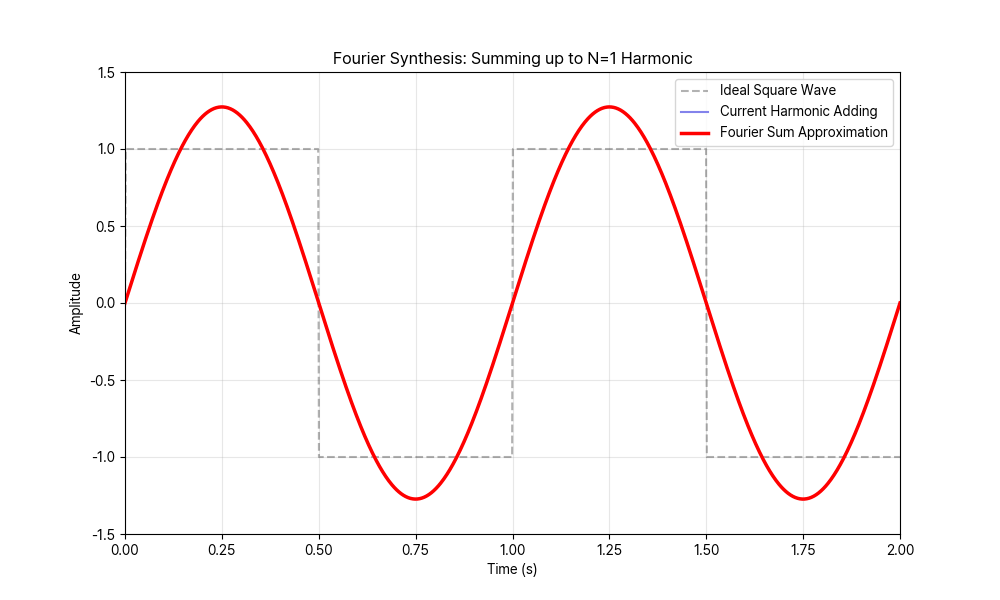
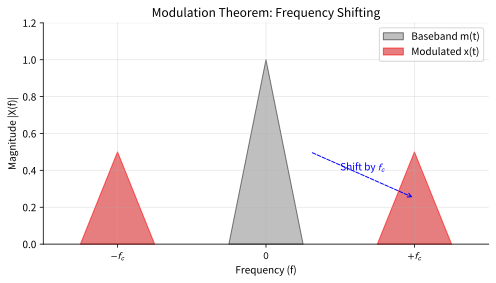
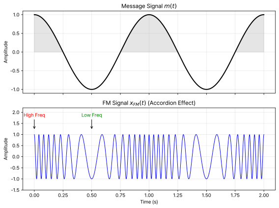

Communication Theory 2026
From 5G Smartphones to SpaceX Starlink
Prof. Kenny Lee (이경근)
EE / KNU
Python Simulation & Engineering Approach
The Magic in Your Hand
여러분이 [Send] 버튼을 누를 때,
0과 1은 어떻게 공중으로 날아갈까요?
"Antennas don't speak Digital.
They only speak Analog Waves."
Connecting the World: Starlink
- Doppler Effect:
위성이 시속 27,000km로 움직일 때 주파수는? - Link Budget:
우주 잡음 속에서 신호를 어떻게 건져내는가?
이 모든 것의 기초:
$$ C = B \log_2 \left( 1 + \frac{S}{N} \right) $$ (Shannon-Hartley Theorem)
Why Python? Visualizing Math
수식으로만 보던 푸리에 급수, 눈으로 확인합니다.

# Python Code Example
import numpy as np
# Summing Sinusoids
for n in range(1, 30, 2):
term = (4/(n*np.pi)) * np.sin(...)
current_sum += term
Ch 3. AM Frequency Shifting
"Modulation is just Moving the Spectrum."
Ch 4. FM Accordion Effect

High Amp → Compressed (High Freq)
Low Amp → Relaxed (Low Freq)
Ready to be an Engineer?
- Understand the Physical Layer
- Master Python Simulation
- Design the Future of Connection
See you in Class.